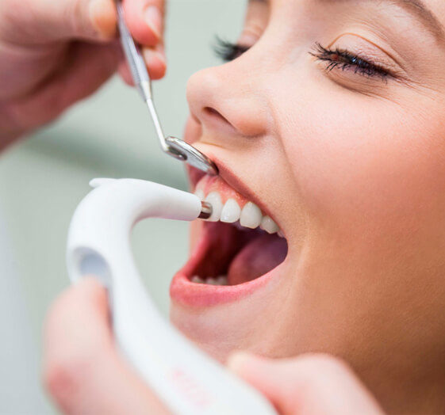
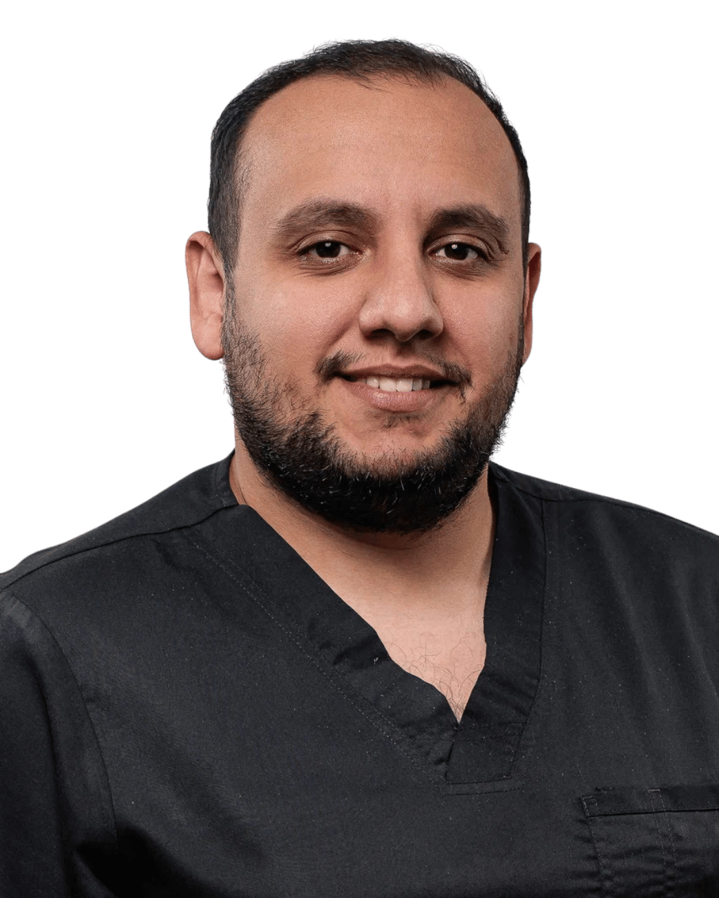
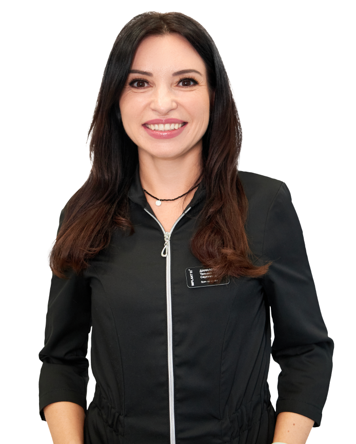

1
Первое посещение
Знакомимся
и начинаем уход
Проходите подходящую платную гигиену. Специалист даёт рекомендации, а администратор рассказывает об участии.
Вы кандидат программыЩётка бесконечности · Имплант52
Любимые вещи обновляются.
Пусть забота о зубах тоже войдёт в привычку.
Подключение после двух регулярных гигиен
Модель наушников он помнит.
Когда купил щётку - не очень.
Хорошая привычка с продолжением
«Щётка бесконечности» - программа для тех, кто регулярно проходит профессиональную гигиену в Имплант52.
Вы заботитесь о зубах вместе со специалистом. Мы помогаем продолжать уход дома и обновлять зубную щётку по условиям программы.
Готовим программу к запуску. О старте и окончательных условиях расскажем в клинике.
Бесконечность - название программы регулярного ухода. Подарочная модель будет указана в её условиях.
От первого визита до новой привычки
Следующее посещение назначает специалист.
У каждого свой график заботы о зубах.
Первое посещение
Проходите подходящую платную гигиену. Специалист даёт рекомендации, а администратор рассказывает об участии.
Вы кандидат программыВторое регулярное посещение
Приходите на следующую подходящую гигиену в рекомендованный срок. После активации получаете первую щётку.
Вы участник программыДальше - вместе
Сохраняете регулярность посещений, а клиника выдаёт новые щётки по графику и условиям программы.
У привычки есть продолжениеЕсли вы уже регулярно проходите гигиену в Имплант52, администратор проверит две последние подходящие процедуры и рекомендованные сроки.
При выполнении условий можно подключиться без ожидания двух новых визитов. Если пока подходит только один - продолжите с него.
Для участия учитываются услуги из перечня программы. Стоимость процедуры и условия подключения уточняются до записи. Дополнительная гигиена только ради подарка не нужна.

Гигиена и профилактика · Имплант52Главное - сам уход
На приёме разбираемся, какой уход подходит вашим зубам и дёснам. Профессиональная гигиена дополняет ежедневную домашнюю чистку.
Оценим состояние полости рта и обсудим чувствительность, вопросы и особенности ухода.
В клинике применяют ультразвук и Air Flow. Состав процедуры специалист подбирает после осмотра.
Объясним технику чистки и поможем подобрать средства для ежедневного ухода.
Состав и стоимость услуги согласуем до процедуры.
Забота без неловкости
Поможем разобраться в уходе,
выбрать средства и следующий шаг.

Стоматолог-гигиенист
Стоматолог-гигиенист

Стоматолог-гигиенист
Ближайшие свободные даты, место приёма и участие специалиста в программе уточнит администратор.
Всё нормально, мы тоже спросили бы
«Щётка бесконечности» - название программы. Речь об обновлении домашних щёток для участников, которые регулярно заботятся о зубах в клинике. Конкретная модель и правила выдачи будут указаны в условиях программы.
После второй подходящей регулярной гигиены и активации участия. Первая процедура даёт статус кандидата, а следующую дату посещения рекомендует специалист.
Администратор проверит прошлые подходящие услуги и соблюдение рекомендованных сроков. Если условия выполнены, можно подключиться по этой истории. Два новых визита в таком случае не нужны.
Для программы предлагаем интервал в три календарных месяца после фактического получения предыдущей щётки. Окончательный график выдач, сроки участия и правила переноса будут опубликованы к запуску.
Частоту посещений специалист определяет индивидуально после осмотра. График выдачи щёток и медицинские рекомендации - разные вещи. Дополнительная процедура только ради участия в программе не требуется.
Перечень участвующих услуг и их стоимость сообщим до записи. Программа готовится к запуску. Сейчас можно записаться на гигиену по действующему прайсу клиники и уточнить условия у администратора.
В предлагаемой механике программы нет обмена на старую щётку, обязательного отзыва или подписки. Полный порядок участия и получения подарков опубликуем к старту.
Нижний Новгород · Имплант52
Выберем удобную дату, ответим на вопросы
и поможем начать с понятного шага.
Нагорная часть города
Заречная часть города
Возможность участия в программе в выбранном филиале уточните у администратора.